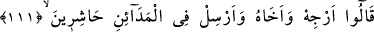
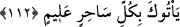

111-112. Dediler ki: Onu da kardeşini de beklet; şehirlere toplayıcılar
(memurlar) yolla. Bütün bilgili sihirbazları sana getirsinler.
Firavun’a “dediler ki: “Onu da kardeşini de” Hârun’u da “beklet.”
Harûn (a.s.)’ın adının açıkça zikredilmemesi, –başka ayetlerde belirtildiği üzere–
Mûsâ (a.s.) ile beraber olduğunun açıkça bilinmesi sebebiyle olduğu söylenmiştir.
“Şehirlere” sihirbazlar için “toplayıcılar” görevliler “yolla.” Şehirler, surlarla
çevrili olup başında bir hükümdar bulunan yerlerdir. Buradaki “şehirler”den maksad,
Mısır’ın “Saîd” denilen güney bölgesidir. Firavun’un oradaki bazı şehirlerinde ihtiyaç
halinde faydalanmak üzere hazır sihirbazlar vardı.
Mûsâ ve kardeşinin işini, onlara yapacaklarını tehir et, acele etme. Şehirlere oralarda
bulunan sihirbazları toplayıp getirmeleri için görevliler gönder.
“Bütün bilgili” sihirde mâhir “sihirbazları” toplayıp “sana getirsinler.”
Sihir, lugatte acayip işler ortaya koymak için başvurulan ince hileler mânâsına gelir.
Bu kelimenin asıl mânâsı, bir şeyin gizli olmasıdır. Karanlığı kişiyi gizlediği için
gecenin sonuna “seher” denilmesi de buradandır. Akciğere de “seher” ismi verilmiştir.
Çünkü, bir şişip bir büzüldüğü için durumu gizli kaldığından böyle isimlendirilmiştir.
Anlatıldığına göre hiçbir asırda, Musa (a.s) zamanında olduğu kadar büyücü yoktu.
Büyücülerin reisleri, Saîd’in uzak şehirlerindeydi.
Dimyatî tefsirinde şöyle anlatılır: Saîd şehirlerinde sihir ilminde tam yetkin olan iki
kardeş vardı. Firavun’un elçisi onların yanına gelince, annelerine kendilerini
babalarının mezarı başına götürmesini istediler. Anneleri götürdü. İki kardeş babalarına
şöyle seslendiler: Ey babamız! İki kişi gelmiş, askerleri ve orduları yok; bir asaları var.
Attıkları zaman ejderhaya dönüşüyor. Önüne ne gelirse yiyor. Bu sebepten Mısır
hükümdarı bizi istemiş. Firavun bizim onunla karşılaşmamızı istiyor.
Kabirdeki babaları şu cevabı verdi: Mısır’a varınca sorunuz, onlar uyuyunca o asâ
yine ejderha oluyor mu, olmuyor mu? Eğer oluyorsa, biliniz ki büyücü değildir. Çünkü
büyücünün büyüsü uyuduğunda tesir etmez. Durum böyle ise ne siz ne de insanlardan
hiç kimse onlarla karşılaşamayacaktır.
Sonuçta iki kardeş on iki bin öğrenci ve arkadaşlarıyla birlikte Mısır’a vardılar ve
Firavun’un yanında toplandılar. Zâdü’l-mesîr’de bu rakam, 70.000 kişi olarak verilir.
Firavun ve taraftarları, işi geciktirerek, iyi tedbirler alarak, ellerinden geleni yapıp ve
gayret sarfederek Allah’ın takdirini değiştireceklerini sandılar. Hakk’ın galip olduğunu,
hükmünün önceden takdir edildiğini ve bu hüküm gelip çattığında ilim ve anlayışın bir
tesiri ve etkisi olmayacağını bilemediler.